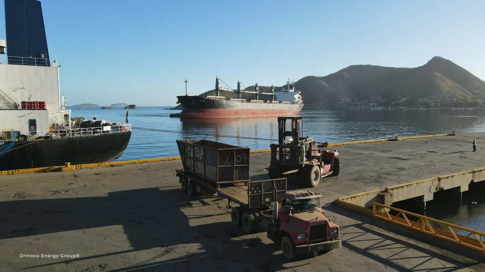
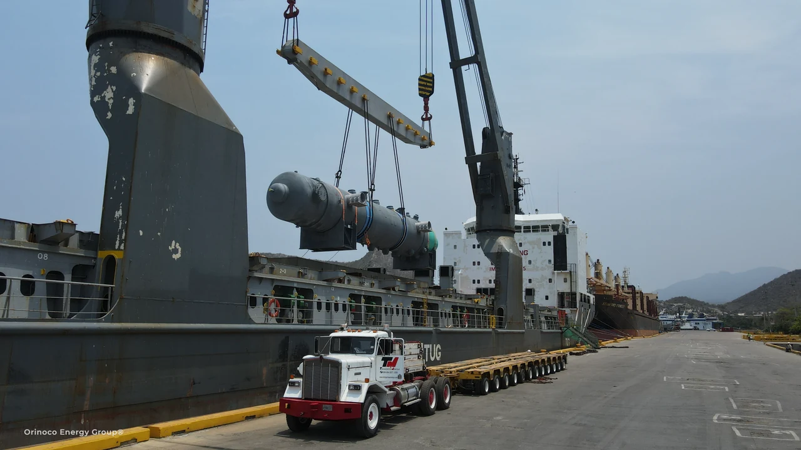
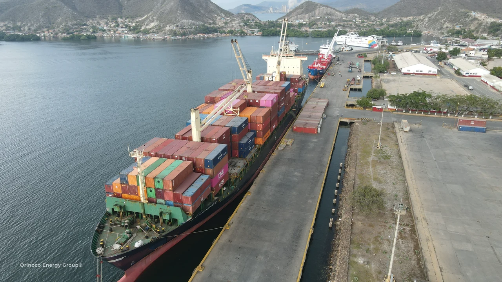

Services
PROCUREMENT. ENERGY.
CONNECTED LOGISTICS.
Source the equipment, connect the specialists and bring the project through origin, shipment, customs and final delivery.

01 / CAPABILITY
Procurement & international supply
Connect the equipment requirement with sourcing, purchasing coordination and a delivery plan. Houston procurement is integrated with our international logistics and energy-service capabilities.
- Supplier sourcing, RFQs and quotation comparison
- Purchase-order coordination and supplier follow-up
- Industrial equipment, specialized machinery and project materials
- Inspection coordination, packing requirements and shipment preparation

02 / CAPABILITY
Project cargo & heavy lift
Industrial equipment and specialized machinery require coordinated execution across every handoff. We plan industrial shipments, oversized loads, energy-project components and equipment for industrial facilities through our companies and allies.
- Industrial equipment and specialized machinery
- Oversized machinery and energy-project components
- Flat racks, special platforms and industrial shipment planning
- Cargo manoeuvre coordination and specialized inland transport
- Full and partial charters, breakbulk and final delivery

03 / CAPABILITY
Ocean freight & port operations
OEG Internacional connects freight forwarding and NVOCC services with ocean, air and ground logistics in the United States and Venezuela. OCK contributes heavy-lift, stevedoring and port-operating expertise.
- FCL, LCL and multimodal freight coordination
- Air freight and road transport in the U.S. and Venezuela
- Vessel chartering and agency coordination
- Stevedoring and container handling
- Port handling and stevedoring coordinated with the relevant local operators

04 / CAPABILITY
Customs & inland delivery
ADUAVEN coordinates customs procedures in Venezuela, connecting import/export documentation and special-regime requirements with cargo release. OEG Internacional links that release with road transport and final delivery.
- Venezuelan customs procedures through ADUAVEN
- Cargo classification, trade documents and clearance follow-up
- Special regimes, temporary-admission requirements and customs transit coordination
- Port release connected with inland transport and delivery

05 / CAPABILITY
Warehousing & alliance network
Plan the space between each leg of the journey, with storage and logistics coordination through the alliance network.
- Origin pickup, consolidation and staging
- Storage, inventory and cross-docking coordination
- Cargo preparation between transport legs
- Destination storage and onward delivery through the network
Additional specialist capabilities
BEYOND
THE SHIPMENT.
The alliance connects logistics with environmental services and technical support at the project site.
Environmental services
ECO GREEN supports industrial and well sanitation, environmental remediation, recovery of operational areas, and port and industrial site cleanup.
Meet ECO GREENAsset integrity & inspection
TUBINCA supports industrial asset inspection, non-destructive testing, engineering and field infrastructure for energy operations.
Meet TUBINCA
Commodity & export logistics
EXPORT READINESS.
SHIPMENT EXECUTION.
Coordinate export cargo from supplier and documentation through port handling and international shipment. Explore scrap, metals, bulk and general cargo alongside the wider export categories.
Explore commodities & exportsYour next project
LET’S MOVE
IT FORWARD.
Tell us what needs to move, where it starts and where it needs to go.
Discuss your project